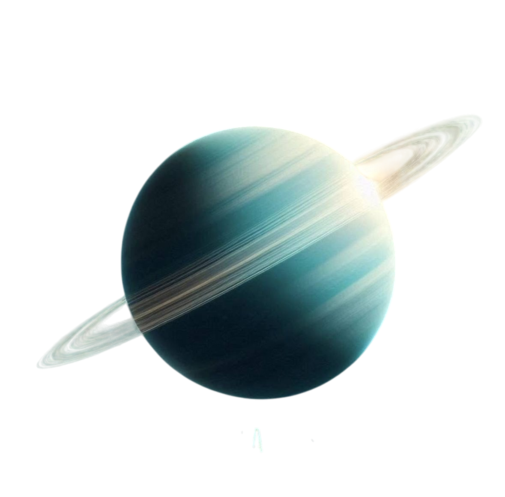

Uran · Level 7 – Python & IT Mix
APIs, data analysis libraries, Git, KPI, SQL and cloud services.
Back to Galaxy 1. What is an API?
API = Application Programming Interface. It defines how different programs can talk to each other.
- Web APIs – access data or services over the internet.
- Examples: payment API, weather API, maps API.
2. pandas for data analysis
pandas is a Python library for working with tables and time series.
3. Version control with Git
Git is a version control system used to track changes in code.
- Save different versions of a project.
- Work in branches.
- Collaborate with others.
4. KPI in business
KPI = Key Performance Indicator. It is a measurable value that shows how well a business reaches its goals.
- Monthly revenue.
- Number of active users.
- Customer retention rate.
5. SQL – database language
SQL = Structured Query Language – language for working with relational databases.
6. Cloud services
Cloud services allow companies to store and process data on remote servers.
- Scalable storage.
- Access from anywhere.
- Backups and reliability.
7. Git for source code
Git is specifically designed for **source code management**, not for things like slides or images (though you can store them there).
8. Python indentation
In Python indentation is **not optional** – it defines code blocks.
Level 7 – Recap
- API = Application Programming Interface.
- pandas = main library for data analysis in Python.
- Git = version control for source code.
- KPI = Key Performance Indicator.
- SQL is used to work with relational databases.
- Cloud services store data on remote servers.
- Python requires consistent indentation.